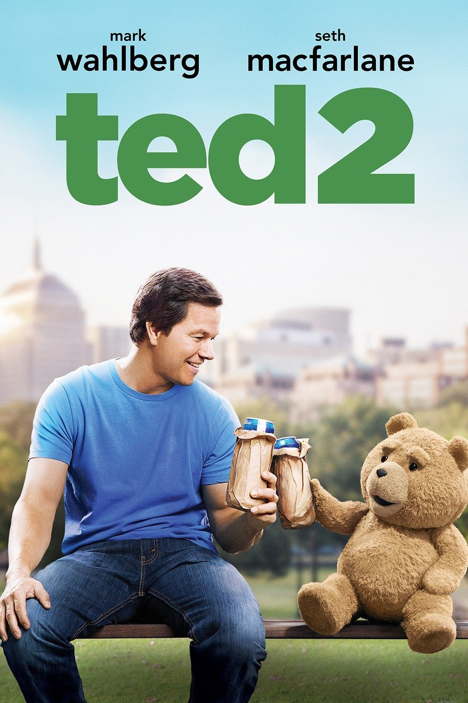

Mortal Kombat

Synopsis:
Mark Wahlberg as John Bennett Seth MacFarlane as Ted Clubber-Lang
Amanda Seyfried as Samantha L. Jackson Jessica Barth as Tami-Lynn
McCafferty Giovanni Ribisi as Donny Morgan Freeman as Patrick
Meighan John Slattery as Shep Wild Patrick Warburton as Guy Michael
Dorn as Rick Bill Smitrovich as Frank Cocoa Brown as Joy John
Carroll Lynch as Tom Jessup Ron Canada as Judge Matheson Jessica
Szohr as Allison Jay Patterson as Karl Jackson Tara Strong as Ted's
"I Love You" function Sam J. Jones as himself Sebastian Arcelus as
Dr. Ed Danzer Maggie Geha as Female Nurse Tom Brady as himself
Dennis Haysbert as Fertility doctor Taran Killam as himself Jimmy
Fallon as himself Jimmy Kimmel as himself Jay Leno as himself Bill
Maher as himself Kate McKinnon as herself Bobby Moynihan as himself
David Hasselhoff as himself Liam Neeson as Trix Customer Lenny
Clarke as Cop Patrick Stewart as Narrator Curtis Stigers as Wedding
singer Nana Visitor as Adoption agent Ralph Garman as Stormtrooper
Jack Knight as Todd Kidder Leonardo Dicaprio as boat driver
Age-Restriction: 18+
Actors:
Life has changed drastically for thunder buddies John, now a
bachelor, and best pal Ted, now married to the woman of his dreams.
Problems arise when the couple decide to adopt a child, but the law
declares Ted to be property and not a person. Angry and dejected,
the lovably foulmouthed teddy bear must now seek legal help from a
young lawyer and a legendary, civil-rights attorney to get the
justice he deserves.
Showing Times:
Cinema 6
10h00-12h00
18h00-20h00